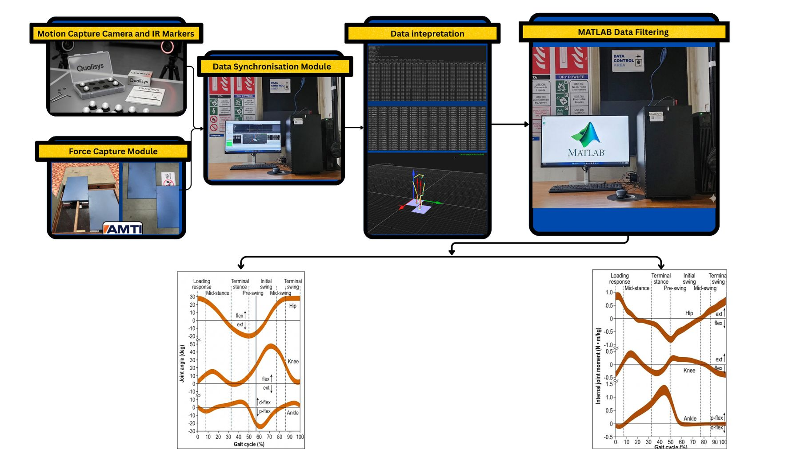

01Programme
The work sits where robotics, human–robot collaboration and biomechanics meet. Instrumented gait experiments give a quantitative reference for how people walk. Models connect that data to joint kinetics. The exoskeleton is then developed and evaluated against both.
02Instrumented gait pipeline

I developed this workflow in the Gait Laboratory. It synchronises Qualisys motion capture, AMTI force plates and Noraxon EMG so that lower-limb kinematics, gait cycles, ground-reaction force, centre of pressure and muscle activity can be analysed together.
03Modelling & simulation
The modelling side is a unified Euler–Lagrange framework built on a three-link (thigh–shank–foot) leg model and validated against Visual3D across five subjects. That manuscript is under review at IEEE Transactions on Robotics, so its results aren't reproduced here. Subject-specific segment parameters are prepared with a body-segment parameter calculator.
04Exoskeleton hardware


05Joint-tracking interface
06My contribution
- Developed the gait-laboratory experimental workflow: Qualisys motion capture, AMTI force plates and Noraxon EMG, synchronised for exoskeleton-assisted gait experiments.
- Worked on the mechanical side of the exoskeleton (CAD and mechanical development).
- Turned measured gait data into model inputs and engineering evidence, which feed the IEEE T-RO manuscript (under review) and the Journal of Biomechanics manuscript (final preparation).